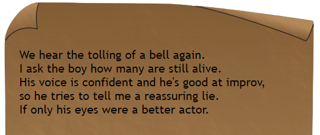

Puzzle 3
One day, while casually strolling through the neighborhood, your eye catches on an old scrap of scroll lying on the floor. You pick it up and examine it.
You hear a broadcast over the radio the day after finding the paper.
"To whoever finds my journal, I hope you can take away three things."
"First, look at how the lines are drawn. Take the first of the smallest unit of time."
"Second, without the number, what do I want you to take away?"
"Finally, string together the smallest pieces from the east."
"Good luck, my friend. It's up to you to find the final missing piece."
Answer:Hints:
What do I do with the text messages?
I don't understand the "Answer Clues".